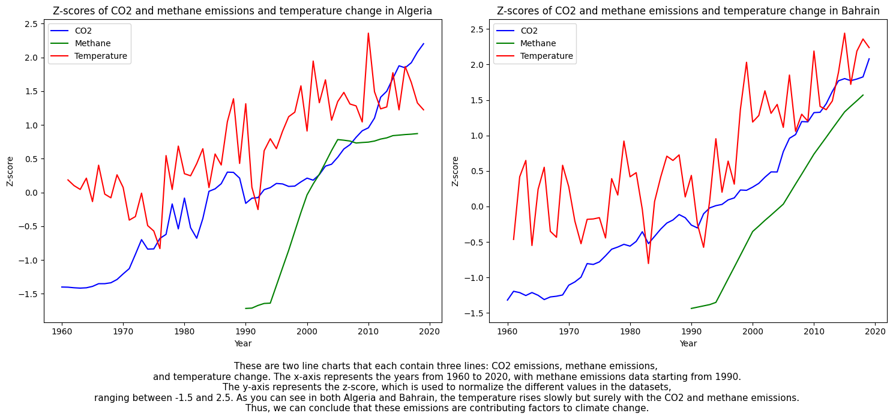
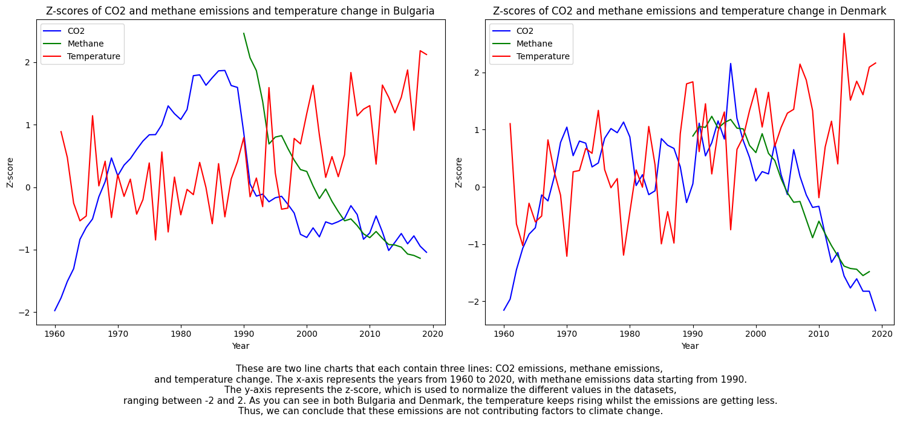
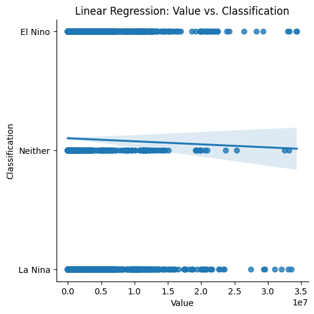
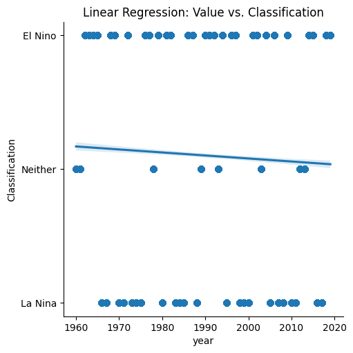

Is it a climate disaster?#
(last updated: June 21, 2023)
repository: slndaniel/informatievisualisatie
Introduction#
Dataset and preprocessing#
import pandas as pd
import numpy as np
import matplotlib.pyplot as plt
import plotly.express as px
import plotly.graph_objects as go
import seaborn as sns
import numpy as np
temperature_data = pd.read_csv('Temperature_change_cleaned.csv')
temperature_dataframe = pd.DataFrame(temperature_data)
temperature_dataframe.head()
| Area Code | Area | Months Code | Months | Element Code | Element | Unit | Y1961 | Y1962 | Y1963 | ... | Y2010 | Y2011 | Y2012 | Y2013 | Y2014 | Y2015 | Y2016 | Y2017 | Y2018 | Y2019 | |
|---|---|---|---|---|---|---|---|---|---|---|---|---|---|---|---|---|---|---|---|---|---|
| 0 | 2 | Afghanistan | 7001 | January | 7271 | Temperature change | °C | 0.777 | 0.062 | 2.744 | ... | 3.601 | 1.179 | -0.583 | 1.233 | 1.755 | 1.943 | 3.416 | 1.201 | 1.996 | 2.951 |
| 1 | 2 | Afghanistan | 7001 | January | 6078 | Standard Deviation | °C | 1.950 | 1.950 | 1.950 | ... | 1.950 | 1.950 | 1.950 | 1.950 | 1.950 | 1.950 | 1.950 | 1.950 | 1.950 | 1.950 |
| 2 | 2 | Afghanistan | 7002 | February | 7271 | Temperature change | °C | -1.743 | 2.465 | 3.919 | ... | 1.212 | 0.321 | -3.201 | 1.494 | -3.187 | 2.699 | 2.251 | -0.323 | 2.705 | 0.086 |
| 3 | 2 | Afghanistan | 7002 | February | 6078 | Standard Deviation | °C | 2.597 | 2.597 | 2.597 | ... | 2.597 | 2.597 | 2.597 | 2.597 | 2.597 | 2.597 | 2.597 | 2.597 | 2.597 | 2.597 |
| 4 | 2 | Afghanistan | 7003 | March | 7271 | Temperature change | °C | 0.516 | 1.336 | 0.403 | ... | 3.390 | 0.748 | -0.527 | 2.246 | -0.076 | -0.497 | 2.296 | 0.834 | 4.418 | 0.234 |
5 rows × 66 columns
new_temperature_data = pd.read_csv('new_temperature.csv')
new_temperature_dataframe = pd.DataFrame(new_temperature_data)
new_temperature_dataframe.head()
| Area Code | Area | Months Code | Months | Element Code | Element | Unit | Year | Temperature | z-score | |
|---|---|---|---|---|---|---|---|---|---|---|
| 0 | 2 | Afghanistan | 7001 | January | 7271 | Temperature change | °C | 1961 | 0.777 | 0.169300 |
| 1 | 2 | Afghanistan | 7002 | February | 7271 | Temperature change | °C | 1961 | -1.743 | -0.700639 |
| 2 | 2 | Afghanistan | 7003 | March | 7271 | Temperature change | °C | 1961 | 0.516 | 0.123397 |
| 3 | 2 | Afghanistan | 7004 | April | 7271 | Temperature change | °C | 1961 | -1.709 | -1.543048 |
| 4 | 2 | Afghanistan | 7005 | May | 7271 | Temperature change | °C | 1961 | 1.412 | 0.541270 |
co2_data = pd.read_csv('CO2_emissions_cleaned.csv')
co2_dataframe = pd.DataFrame(co2_data)
co2_dataframe.head()
| country_code | country_name | year | value | |
|---|---|---|---|---|
| 0 | ABW | Aruba | 1960 | 11092.675 |
| 1 | ABW | Aruba | 1961 | 11576.719 |
| 2 | ABW | Aruba | 1962 | 12713.489 |
| 3 | ABW | Aruba | 1963 | 12178.107 |
| 4 | ABW | Aruba | 1964 | 11840.743 |
co2_dataframe['Mean'] = co2_dataframe.groupby('country_code')['value'].transform('mean')
co2_dataframe['Std'] = co2_dataframe.groupby('country_code')['value'].transform('std')
co2_dataframe['z-score'] = (co2_dataframe['value'] - co2_dataframe['Mean']) / co2_dataframe['Std']
new_co2_dataframe = co2_dataframe[['country_code', 'country_name', 'year', 'value', 'z-score']]
new_co2_dataframe.to_csv('new_co2.csv', index=False)
new_co2_data = pd.read_csv('new_co2.csv')
new_co2_dataframe = pd.DataFrame(new_co2_data)
new_co2_dataframe.head()
| country_code | country_name | year | value | z-score | |
|---|---|---|---|---|---|
| 0 | ABW | Aruba | 1960 | 11092.675 | 0.769185 |
| 1 | ABW | Aruba | 1961 | 11576.719 | 0.850040 |
| 2 | ABW | Aruba | 1962 | 12713.489 | 1.039926 |
| 3 | ABW | Aruba | 1963 | 12178.107 | 0.950496 |
| 4 | ABW | Aruba | 1964 | 11840.743 | 0.894143 |
methane_data = pd.read_csv('Methane_emissions_cleaned.csv')
methane_dataframe = pd.DataFrame(methane_data)
methane_dataframe.head()
| Country | Sector | Gas | Unit | 2018 | 2017 | 2016 | 2015 | 2014 | 2013 | ... | 1999 | 1998 | 1997 | 1996 | 1995 | 1994 | 1993 | 1992 | 1991 | 1990 | |
|---|---|---|---|---|---|---|---|---|---|---|---|---|---|---|---|---|---|---|---|---|---|
| 0 | China | Total excluding LUCF | CH4 | MTCO2e | 1238.63 | 1239.13 | 1242.15 | 1237.52 | 1206.21 | 1178.02 | ... | 825.69 | 813.83 | 791.73 | 823.86 | 798.45 | 773.65 | 757.56 | 751.66 | 743.07 | 730.34 |
| 1 | Russia | Total excluding LUCF | CH4 | MTCO2e | 849.57 | 850.17 | 852.55 | 835.56 | 830.22 | 825.64 | ... | 598.70 | 597.72 | 610.38 | 622.22 | 639.73 | 666.92 | 724.72 | 780.89 | 863.52 | 929.97 |
| 2 | India | Total excluding LUCF | CH4 | MTCO2e | 666.51 | 661.61 | 657.69 | 652.00 | 653.67 | 653.53 | ... | 584.49 | 577.29 | 567.46 | 560.74 | 551.49 | 543.90 | 539.00 | 533.31 | 528.53 | 522.74 |
| 3 | United States | Total excluding LUCF | CH4 | MTCO2e | 622.59 | 614.50 | 609.20 | 617.17 | 620.81 | 618.41 | ... | 688.34 | 702.98 | 722.83 | 738.60 | 745.84 | 758.52 | 751.48 | 768.67 | 769.82 | 766.55 |
| 4 | Brazil | Total excluding LUCF | CH4 | MTCO2e | 416.28 | 421.66 | 424.80 | 422.28 | 416.35 | 411.88 | ... | 322.94 | 318.14 | 311.06 | 304.62 | 311.55 | 311.16 | 305.47 | 304.56 | 300.17 | 285.24 |
5 rows × 33 columns
df_transposed = pd.melt(methane_dataframe, id_vars=['Country'], var_name='Year', value_name='Methane value')
df_transposed.sort_values(['Country', 'Year'], inplace=True)
df_transposed['Year'] = pd.to_numeric(df_transposed['Year'], errors='coerce')
df_transposed = df_transposed.dropna(subset=['Year'])
df_transposed.to_csv('new_methane.csv', index = False)
new_methane_data = pd.read_csv('new_methane.csv')
new_methane_dataframe = pd.DataFrame(new_methane_data)
new_methane_dataframe['Mean'] = new_methane_dataframe.groupby('Country')['Methane value'].transform('mean')
new_methane_dataframe['Std'] = new_methane_dataframe.groupby('Country')['Methane value'].transform('std')
new_methane_dataframe['z-score'] = (new_methane_dataframe['Methane value'] - new_methane_dataframe['Mean']) / new_methane_dataframe['Std']
new_methane_dataframe = new_methane_dataframe[['Country', 'Year', 'Methane value', 'z-score']]
new_methane_dataframe.to_csv('new_methane.csv', index = False)
new_methane_dataframe.head()
| Country | Year | Methane value | z-score | |
|---|---|---|---|---|
| 0 | Afghanistan | 1990.0 | 8.97 | -0.722564 |
| 1 | Afghanistan | 1991.0 | 9.07 | -0.718711 |
| 2 | Afghanistan | 1992.0 | 8.99 | -0.721793 |
| 3 | Afghanistan | 1993.0 | 8.89 | -0.725647 |
| 4 | Afghanistan | 1994.0 | 8.96 | -0.722950 |
elnino_data = pd.read_csv('ElNino_LaNina_cleaned.csv')
elnino_dataframe = pd.DataFrame(elnino_data)
elnino_dataframe.head()
| year | Jan | Feb | Mar | Apr | May | Jun | Jul | Aug | Sep | Oct | Nov | Dec | |
|---|---|---|---|---|---|---|---|---|---|---|---|---|---|
| 0 | 1950 | -0.5 | -0.4 | -0.4 | -0.4 | -0.6 | -0.8 | -0.8 | -0.5 | -0.2 | 0.2 | 0.4 | 0.6 |
| 1 | 1951 | 0.7 | 0.9 | 1.0 | 1.2 | 1.0 | 0.8 | 0.5 | 0.4 | 0.3 | 0.3 | 0.2 | 0.0 |
| 2 | 1952 | -0.1 | 0.0 | 0.2 | 0.1 | 0.0 | 0.1 | 0.4 | 0.6 | 0.6 | 0.7 | 0.8 | 0.8 |
| 3 | 1953 | 0.7 | 0.7 | 0.8 | 0.8 | 0.8 | 0.8 | 0.8 | 0.5 | 0.0 | -0.4 | -0.5 | -0.5 |
| 4 | 1954 | -0.6 | -0.8 | -0.9 | -0.8 | -0.7 | -0.7 | -0.7 | -0.6 | -0.7 | -0.8 | -0.8 | -0.7 |
new_elnino_data = pd.read_csv('ElNino_LaNina_cleaned.csv')
new_elnino_dataframe = pd.DataFrame(new_elnino_data)
max_values = new_elnino_dataframe.iloc[:, 1:].max(axis=1)
min_values = new_elnino_dataframe.iloc[:, 1:].min(axis=1)
values_to_use = np.where(max_values.abs() >= min_values.abs(), max_values, min_values)
mean_value = values_to_use.mean()
std_value = values_to_use.std()
z_scores = (values_to_use - mean_value) / std_value
new_elnino_dataframe['z-score'] = z_scores
new_elnino_dataframe = new_elnino_dataframe[['year', 'z-score']]
new_elnino_dataframe.head()
| year | z-score | |
|---|---|---|
| 0 | 1950 | -0.784710 |
| 1 | 1951 | 0.904352 |
| 2 | 1952 | 0.566540 |
| 3 | 1953 | 0.566540 |
| 4 | 1954 | -0.869164 |
Perspective one#
# Chris
fig, (chart1, chart2) = plt.subplots(1, 2, figsize=(15, 6))
# Algeria
co2_algeria = new_co2_dataframe[
(new_co2_dataframe['country_name'] == 'Algeria') &
(new_co2_dataframe['year'].between(1960, 2023))
]
methane_algeria = new_methane_dataframe[
(new_methane_dataframe['Country'] == 'Algeria') &
(new_methane_dataframe['Year'].between(1960, 2023))
]
temperature_algeria = new_temperature_dataframe[
(new_temperature_dataframe['Area'] == 'Algeria') &
(new_temperature_dataframe['Year'].between(1960, 2023)) &
(new_temperature_dataframe['Months'] == 'Meteorological year')
]
chart1.plot(co2_algeria['year'], co2_algeria['z-score'], label='CO2', color='blue')
chart1.plot(methane_algeria['Year'], methane_algeria['z-score'], label='Methane', color='green')
chart1.plot(temperature_algeria['Year'], temperature_algeria['Temperature'], label='Temperature', color='red')
chart1.set_xlabel('Year')
chart1.set_ylabel('Z-score')
chart1.set_title('Z-scores of CO2 and methane emissions and temperature change in Algeria')
chart1.legend()
# Bahrain
co2_bahrain = new_co2_dataframe[
(new_co2_dataframe['country_name'] == 'Bahrain') &
(new_co2_dataframe['year'].between(1960, 2023))
]
methane_bahrain = new_methane_dataframe[
(new_methane_dataframe['Country'] == 'Bahrain') &
(new_methane_dataframe['Year'].between(1960, 2023))
]
temperature_bahrain = new_temperature_dataframe[
(new_temperature_dataframe['Area'] == 'Bahrain') &
(new_temperature_dataframe['Year'].between(1960, 2023)) &
(new_temperature_dataframe['Months'] == 'Meteorological year')
]
chart2.plot(co2_bahrain['year'], co2_bahrain['z-score'], label='CO2', color='blue')
chart2.plot(methane_bahrain['Year'], methane_bahrain['z-score'], label='Methane', color='green')
chart2.plot(temperature_bahrain['Year'], temperature_bahrain['Temperature'], label='Temperature', color='red')
chart2.set_xlabel('Year')
chart2.set_ylabel('Z-score')
chart2.set_title('Z-scores of CO2 and methane emissions and temperature change in Bahrain')
chart2.legend()
captiontext = '''These are two line charts that each contain three lines: CO2 emissions, methane emissions,
and temperature change. The x-axis represents the years from 1960 to 2020, with methane emissions data starting from 1990.
The y-axis represents the z-score, which is used to normalize the different values in the datasets,
ranging between -1.5 and 2.5. As you can see in both Algeria and Bahrain, the temperature rises slowly but surely with the CO2 and methane emissions.
Thus, we can conclude that these emissions are contributing factors to climate change.'''
fig.text(0.5, -0.15, captiontext, horizontalalignment='center', fontsize=11)
plt.tight_layout()
plt.show()

trace = go.Scatter(
x=co2_china['z-score'],
y=methane_china['z-score'],
mode='markers',
marker=dict(
size=abs(temperature_china['Temperature']) * 10,
sizemode='diameter',
sizeref=0.1,
color=temperature_china['Temperature'],
colorscale='Viridis',
showscale=True,
cmin=temperature_china['Temperature'].min(),
cmax=temperature_china['Temperature'].max()
),
text=co2_china['z-score'],
hovertemplate=
'<b>CO2: %{x}</b><br>'+
'<b>Methane: %{y}</b><br>'+
'<b>Temperature Z-Score: %{marker.size}</b><br>',
)
layout = go.Layout(
title='CO2, Methane, and Temperature Z-Scores in China',
xaxis=dict(title='CO2'),
yaxis=dict(title='Methane'),
hovermode='closest',
margin=dict(
l=100,
r=80,
t=100,
b=130
)
)
fig = go.Figure(data=[trace], layout=layout)
fig.update_layout(
annotations=[
dict(
text='Caption: Bubble chart showing the relationship between CO2 and Methane z-scores in China, <br>'+
'with the size of the dots representing the intensity of the Temperature Z-Scores. <br>'+
'The blue dots represent a higher temperature than the purple dots, <br>'+
'indicating a relationship between higher temperatures and rising CO2 and methane levels.',
xref='paper',
yref='paper',
x=0,
y=-0.42,
showarrow=False,
font=dict(
size=12,
color='black'
)
)
],
height=500,
width=780
)
fig.show()
---------------------------------------------------------------------------
NameError Traceback (most recent call last)
Cell In[11], line 2
1 trace = go.Scatter(
----> 2 x=co2_china['z-score'],
3 y=methane_china['z-score'],
4 mode='markers',
5 marker=dict(
6 size=abs(temperature_china['Temperature']) * 10,
7 sizemode='diameter',
8 sizeref=0.1,
9 color=temperature_china['Temperature'],
10 colorscale='Viridis',
11 showscale=True,
12 cmin=temperature_china['Temperature'].min(),
13 cmax=temperature_china['Temperature'].max()
14 ),
15 text=co2_china['z-score'],
16 hovertemplate=
17 '<b>CO2: %{x}</b><br>'+
18 '<b>Methane: %{y}</b><br>'+
19 '<b>Temperature Z-Score: %{marker.size}</b><br>',
20 )
22 layout = go.Layout(
23 title='CO2, Methane, and Temperature Z-Scores in China',
24 xaxis=dict(title='CO2'),
(...)
32 )
33 )
35 fig = go.Figure(data=[trace], layout=layout)
NameError: name 'co2_china' is not defined
Perspective two#
# Chris
fig, (chart1, chart2) = plt.subplots(1, 2, figsize=(15, 6))
# Bulgaria
co2_bulgaria = new_co2_dataframe[
(new_co2_dataframe['country_name'] == 'Bulgaria') &
(new_co2_dataframe['year'].between(1960, 2023))
]
methane_bulgaria = new_methane_dataframe[
(new_methane_dataframe['Country'] == 'Bulgaria') &
(new_methane_dataframe['Year'].between(1960, 2023))
]
temperature_bulgaria = new_temperature_dataframe[
(new_temperature_dataframe['Area'] == 'Bulgaria') &
(new_temperature_dataframe['Year'].between(1960, 2023)) &
(new_temperature_dataframe['Months'] == 'Meteorological year')
]
chart1.plot(co2_bulgaria['year'], co2_bulgaria['z-score'], label='CO2', color='blue')
chart1.plot(methane_bulgaria['Year'], methane_bulgaria['z-score'], label='Methane', color='green')
chart1.plot(temperature_bulgaria['Year'], temperature_bulgaria['Temperature'], label='Temperature', color='red')
chart1.set_xlabel('Year')
chart1.set_ylabel('Z-score')
chart1.set_title('Z-scores of CO2 and methane emissions and temperature change in Bulgaria')
chart1.legend()
# Denmark
co2_denmark = new_co2_dataframe[
(new_co2_dataframe['country_name'] == 'Denmark') &
(new_co2_dataframe['year'].between(1960, 2023))
]
methane_denmark = new_methane_dataframe[
(new_methane_dataframe['Country'] == 'Denmark') &
(new_methane_dataframe['Year'].between(1960, 2023))
]
temperature_denmark = new_temperature_dataframe[
(new_temperature_dataframe['Area'] == 'Denmark') &
(new_temperature_dataframe['Year'].between(1960, 2023)) &
(new_temperature_dataframe['Months'] == 'Meteorological year')
]
chart2.plot(co2_denmark['year'], co2_denmark['z-score'], label='CO2', color='blue')
chart2.plot(methane_denmark['Year'], methane_denmark['z-score'], label='Methane', color='green')
chart2.plot(temperature_denmark['Year'], temperature_denmark['Temperature'], label='Temperature', color='red')
chart2.set_xlabel('Year')
chart2.set_ylabel('Z-score')
chart2.set_title('Z-scores of CO2 and methane emissions and temperature change in Denmark')
chart2.legend()
captiontext = '''These are two line charts that each contain three lines: CO2 emissions, methane emissions,
and temperature change. The x-axis represents the years from 1960 to 2020, with methane emissions data starting from 1990.
The y-axis represents the z-score, which is used to normalize the different values in the datasets,
ranging between -2 and 2. As you can see in both Bulgaria and Denmark, the temperature keeps rising whilst the emissions are getting less.
Thus, we can conclude that these emissions are not contributing factors to climate change.'''
fig.text(0.5, -0.15, captiontext, horizontalalignment='center', fontsize=11)
plt.tight_layout()
plt.show()

trace = go.Scatter(
x=co2_afghanistan['z-score'],
y=methane_afghanistan['z-score'],
mode='markers',
marker=dict(
size=abs(temperature_afghanistan['Temperature']) * 7,
sizemode='diameter',
sizeref=0.1,
color=temperature_afghanistan['Temperature'],
colorscale='Viridis',
showscale=True,
cmin=temperature_afghanistan['Temperature'].min(),
cmax=temperature_afghanistan['Temperature'].max()
),
text=co2_afghanistan['z-score'],
hovertemplate=
'<b>CO2: %{x}</b><br>'+
'<b>Methane: %{y}</b><br>'+
'<b>Temperature Z-Score: %{marker.size}</b><br>',
)
layout = go.Layout(
title='CO2, Methane, and Temperature Z-Scores in Afghanistan',
xaxis=dict(title='CO2'),
yaxis=dict(title='Methane'),
hovermode='closest',
margin=dict(
l=100,
r=80,
t=100,
b=130
)
)
fig = go.Figure(data=[trace], layout=layout)
fig.update_layout(
annotations=[
dict(
text='Caption: Bubble chart showing the relationship between CO2 and Methane z-scores in Afghanistan, <br>'+
'with the size of the dots representing the intensity of the Temperature Z-Scores. <br>'+
'The green dots represent a higher temperature than the purple dots, <br>'+
'you can see big green dots in the lower left and upper right corners, <br>'+
'indicating that there is no relationship between higher temperatures and rising CO2 and methane levels.',
xref='paper',
yref='paper',
x=0,
y=-0.46,
showarrow=False,
font=dict(
size=12,
color='black'
)
)
],
height=500,
width=780
)
fig.show()
Perspective three#
CO2_elnino_df = pd.read_csv('CO2_merge_elnino_lanina.csv')
sns.lmplot(data=CO2_elnino_df, x='value', y='Classification')
plt.yticks([0, 1, 2], ['La Nina', 'Neither', 'El Nino'])
plt.xlabel('Value')
plt.ylabel('Classification')
plt.title('Linear Regression: Value vs. Classification')
plt.show()
sns.lmplot(data=CO2_elnino_df, x='year', y='Classification')
plt.yticks([0, 1, 2], ['La Nina', 'Neither', 'El Nino'])
plt.xlabel('year')
plt.ylabel('Classification')
plt.title('Linear Regression: Value vs. Classification')
plt.show()

